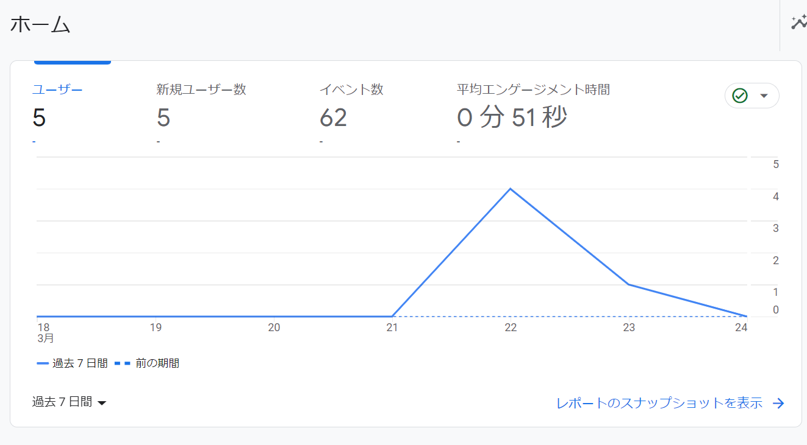
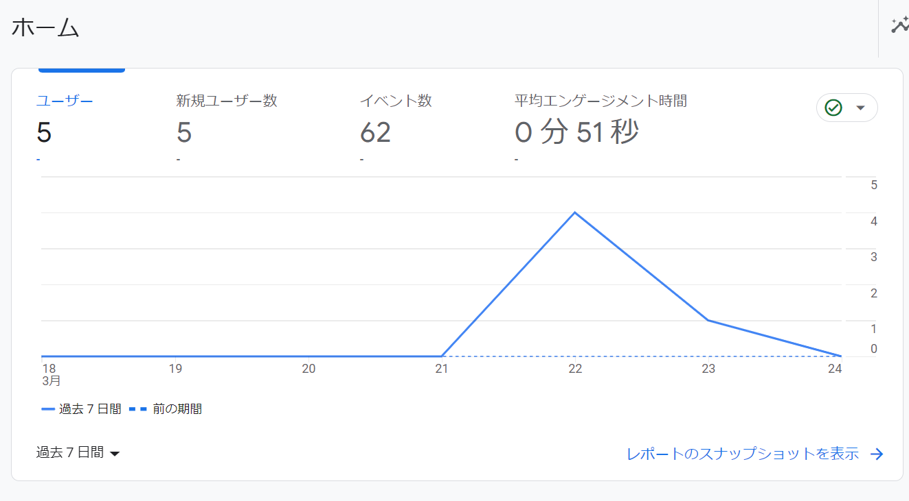

作成日：
最終更新日：
Google Analyticsをこのサイトに設定してみました。
タグを挟み込めば、アクセスが見られるのだが、全ページにコピペするのも、後々変更したい時などに困りそうなので、javascriptで挿入している。
数日たったが、こんな感じで表示されていた。当然ながらそんなにアクセスはない。 
とはいえ、少しでもアクセスがあるのが分かったほうがやる気がわくという面もある。
Google Analyticsをこのサイトに設定してみました。
タグを挟み込めば、アクセスが見られるのだが、全ページにコピペするのも、後々変更したい時などに困りそうなので、javascriptで挿入している。
数日たったが、こんな感じで表示されていた。当然ながらそんなにアクセスはない。 
とはいえ、少しでもアクセスがあるのが分かったほうがやる気がわくという面もある。